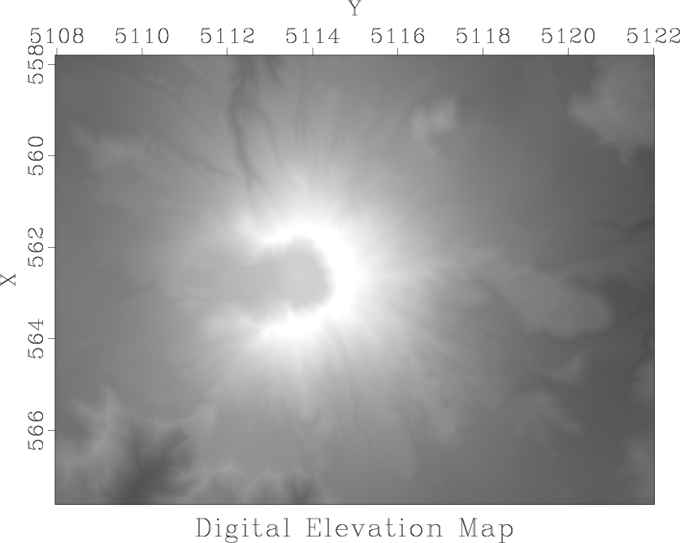
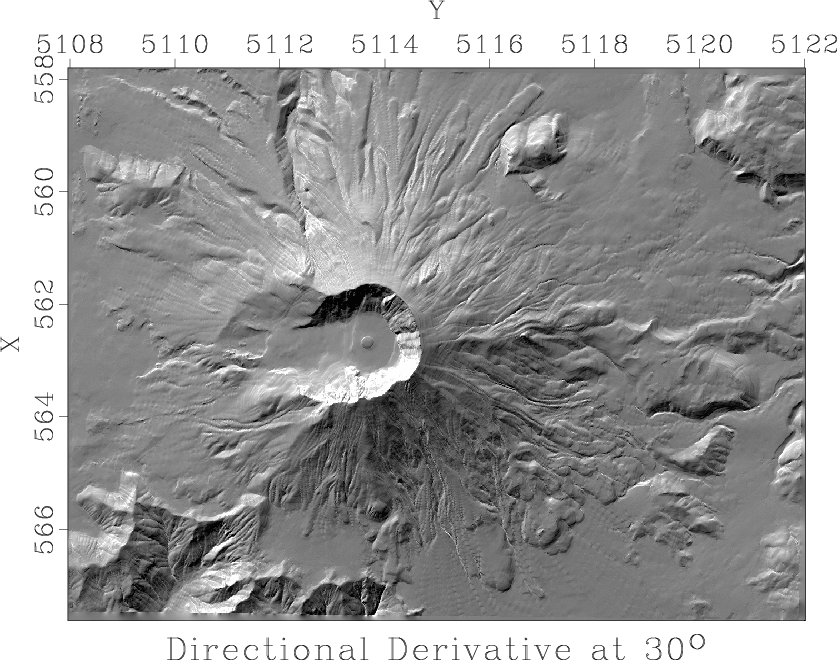
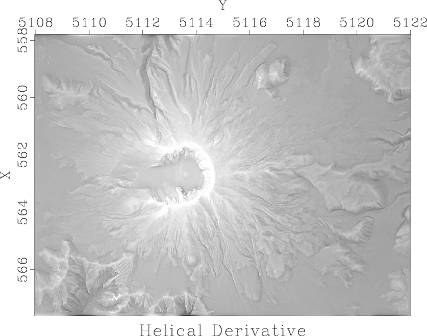

|
|
|
|
Homework 2 |
In this part of the assignment, we will use a digital elevation map of the Mount St. Helens area, shown in Figure 4.
|
data
Figure 4. Digital elevation map of Mount St. Helens area. |  |
|---|---|
|
|
Figure 5 shows a directional derivative, a digital approximation to
|
der
Figure 5. Directional derivative of elevation. |  |
|---|---|
|
|
Figure 6 shows an application of helical
derivative, a filter designed by spectral factorization of the
Laplacian filter
|
helder
Figure 6. Helix derivative of elevation. |  |
|---|---|
|
|
scons viewto reproduce the figures on your screen.
scons der.view
from rsf.proj import *
import math
# Download data
txt = 'st-helens_after.txt'
Fetch(txt,'data',
server='https://raw.githubusercontent.com',
top='agile-geoscience/notebooks/master')
Flow('data.asc',txt,'/usr/bin/tail -n +6')
# Convert to RSF format
Flow('data','data.asc',
'''
echo in=$SOURCE data_format=ascii_float
label=Elevation unit=m
n1=979 o1=557.805 d1=0.010030675 label1=X
n2=1400 o2=5107.965 d2=0.010035740 label2=Y |
dd form=native |
clip2 lower=0 | lapfill grad=y niter=200
''')
Result('data','grey title="Digital Elevation Map" allpos=y')
# Vertical and horizontal derivatives
Flow('der1','data','igrad')
Flow('der2','data','transp | igrad | transp')
ders = []
for alpha in range(0,360,10):
der = 'der%d' % alpha
# Directional derivative
Flow(der,'der1 der2',
'''
add ${SOURCES[1]} scale=%g,%g
''' % (math.cos(alpha*math.pi/180),
math.sin(alpha*math.pi/180)))
ders.append(der)
Flow('ders',ders,
'''
cat axis=3 ${SOURCES[1:%d]} |
put o3=0 d3=10
''' % len(ders))
# Semblance
Flow('ders2','ders','mul $SOURCE')
Flow('stack','ders2','stack axis=2 norm=n | stack axis=1 norm=n')
Flow('stack2','ders2',
'mul $SOURCE | stack axis=2 norm=n | stack axis=1 norm=n')
Flow('sembl','stack stack2',
'mul ${SOURCES[0]} | div ${SOURCES[1]} | scale axis=1')
Result('sembl',
'graph title=Semblance label1=Degree unit1="ô_" ')
Plot('ders','grey gainpanel=all wanttitle=n',view=1)
# !!! MODIFY BELOW !!!
alpha=30
Result('der','der%d' % alpha,
'''
grey title="Directional Derivative at %gô_"
''' % alpha)
# Laplacian filter on a helix (!!! MODIFY !!!)
Flow('slag0.asc',None,
'''echo 1 1000 n1=2 n=1000,1000
data_format=ascii_int in=$TARGET
''')
Flow('slag','slag0.asc','dd form=native')
Flow('ss0.asc','slag',
'''echo -1 -1 a0=2 n1=2
lag=$SOURCE in=$TARGET data_format=ascii_float''')
Flow('ss','ss0.asc','dd form=native')
# Wilson-Burg factorization
na=50 # filter length
lags = range(1,na+1) + range(1002-na,1002)
Flow('alag0.asc',None,
'''echo %s n=1000,1000 n1=%d in=$TARGET
data_format=ascii_int
''' % (' '.join(map(str,lags)),2*na))
Flow('alag','alag0.asc','dd form=native')
Flow('hflt hlag','ss alag',
'wilson lagin=${SOURCES[1]} lagout=${TARGETS[1]}')
# Helical derivative
Flow('helder','data hflt hlag','helicon filt=${SOURCES[1]}')
Result('helder','grey title="Helical Derivative" ')
def plotfilt(title):
return '''
window n1=11 n2=11 f1=50 f2=50 |
grey wantaxis=n title="%s" pclip=100
crowd=0.85 screenratio=1
''' % title
# Laplacian impulse response
Flow('spike',None,'spike n1=111 n2=111 k1=56 k2=56')
Flow('imp0','spike ss','helicon filt=${SOURCES[1]} adj=0')
Flow('imp1','spike ss','helicon filt=${SOURCES[1]} adj=1')
Flow('imp','imp0 imp1','add ${SOURCES[1]}')
Plot('imp',plotfilt('(a) Laplacian'))
# Test factorization
Flow('fac0','imp hflt',
'helicon filt=${SOURCES[1]} adj=0 div=1')
Flow('fac1','imp hflt',
'helicon filt=${SOURCES[1]} adj=1 div=1')
Plot('fac0',plotfilt('(b) Laplacian/Factor'))
Plot('fac1',plotfilt('(c) Laplacian/Factor'))
Flow('fac','fac0 hflt',
'helicon filt=${SOURCES[1]} adj=1 div=1')
Plot('fac',plotfilt('(d) Laplacian/Factor/Factor'))
Result('laplace','imp fac0 fac1 fac','TwoRows',
vppen='gridsize=5,5 xsize=11 ysize=11')
End()
|
|
|
|
|
Homework 2 |
{kind=link}
{kind=link}
{kind=link}